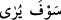
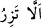
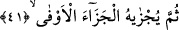

talep ettiğimiz şeylerin nihâyetine kadar ulaştırmasını niyaz ederiz!
40. Ve çalışması da ileride görülecektir.
“Ve çalışması da…” Yâni insanın çalışması onun ameli demektir. Nitekim “sizin
işiniz çeşit çeşittir.” (el-Leyl 92/4) âyetinde bu mânâdadır. (__WORD__) kısmı haberi (__WORD__) ile birlikte makablindeki
(__WORD__) cümlesine “Bu zikrolunanların tamamı suhuflardadır” mânâsıyla ma’tuftur.
“İleride görülecektir” yâni kendisine kıyâmet gününde arz olunup amel sayfasında ve
mizanında olan şeyler gösterilecektir. Bir kimseye bir şeyi göstermek, ona bunu arz
etmek ve önüne açıp bakmasını talep etmektir.
Âyette her insanın farklı sa’y mertebeleri olduğuna işâret edilmektedir. Buna göre
insan, mertebesi oranında bulunmuş olduğu hâlin sa’yine kavuşur. Bu sa’y artık ondan ne
artar ve ne de azalır. İnsanın varacağı yer için çalışması bu neviden bir sa’ydır.
Bunun ilk mertebesi nefis mertebesidir. Bu mertebede kişi şerîata muvafakat ve
tabîata muhâlefet suretiyle nefsini şerîata muhâlefetten ve tabîata muvâfakat ile tezkiye
edip arındırır. Çünkü bunun ilacı, nefsin zıddına hareket etmektir. Bu çalışmanın
neticesi, Kitâb-ı azîzin diğer âyetlerinde buyrulduğu üzere; altından nehirler akan,
içerisinde hûrîler ve saraylar bulunan cennetlere kavuşmanın hâsıl olmasıdır. İkinci
mertebe, kalben beşerî zulümât pasından ve tabiî bulanıkların örtüsünden tasfiye edilme
safhasındaki çalışmadır. Bu çalışmanın eseri de dünya sevgisinin, şehvetlerinin,
lezzetlerinin, süslerinin, mal ve makamının terk edilmesidir. Üçüncü mertebedeki sa’ye
gelince, bu da sırrın ilâhî sıfatlar ve Rabbânî ahlâk ile zinetlenip süslenmesidir. Bu
sa’yin eseri ise kulun sıfât ve esmâ tecellîlerini müşâhede etmesidir. Dördüncü
mertebedeki çalışmanın neticesi ise rûhun zâtî tecellîler ve hakkânî müşâhedelerle
süslenmesidir. Bu sa’yin eseri ve neticesi de kulun enâniyetinden fenâ bulması, takyîd
ve itlaktan uzak, mutlak ahadiyet hüviyetiyle bakâ bulmasıdır.
Vâsıtî der ki: “Sözkonusu âyet kendisiyle herhangi bir sevabın celbinin talep edildiği
bir âyet hükmünde değildir.” Sehl de der ki: “Kul sa’yini görecek ve bu sa’yinin Hakk’a
ermek için yeterli olmadığını ve (sadece) onunla Hakk’a ulaşamayacağını anlayıp
Rabb’inin fazlının ona yetişmemesi hâlinde ise helâk olacağına kanâat getirecektir.”
41. Sonra ona karşılığı tastamam verilecektir.